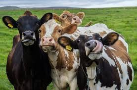
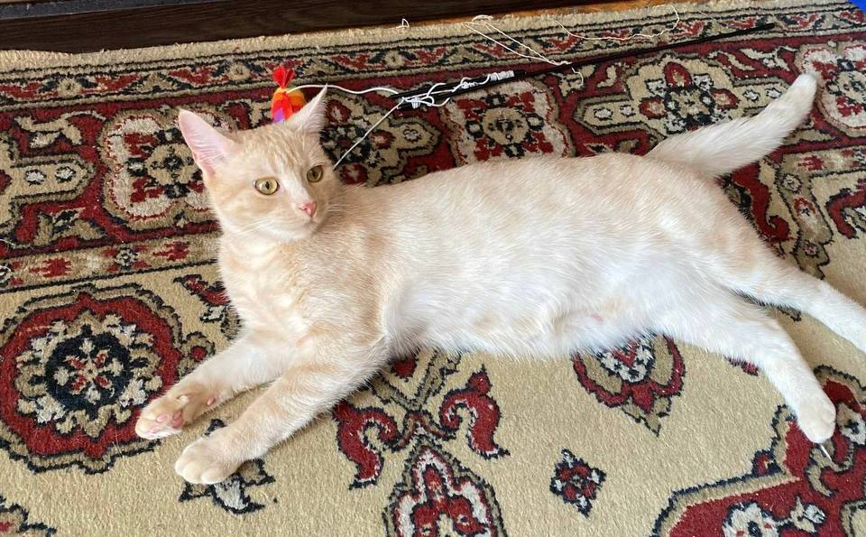
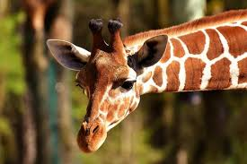
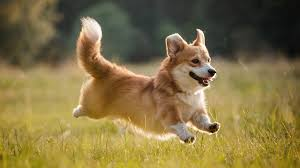

Незвичайні звички та здібності тварин

Як виховують левенят
Дорослі леви під час ігор з маленькими левенятами часто вдають, що їм дуже боляче від їхніх укусів, і навіть падають на землю. Вони роблять це навмисно, щоб підбадьорити малюків та додати їм впевненості, поки ті лише вчаться полювати.
Пам'ять та емоції слонів
Слони мають феноменальну пам'ять. Вони здатні через десятки років згадати маршрути до води або впізнати людину, яка колись поставилася до них добре чи погано. Окрім того, слони вміють щиро сумувати за померлими родичами.

Дружба серед тварин
Корови — дуже соціальні тварини, які вміють по-справжньому дружити. У череді вони майже завжди обирають собі одну "найкращу подругу" і проводять з нею весь час. Якщо їх розлучити, корова починає сильно сумувати і переживати стрес.

Користь котячого мурчання
Мурчання котів — це не просто ознака задоволення. Вчені з'ясували, що звукові коливання, які видає кішка (в діапазоні 25-150 Герц), допомагають її власному тілу швидше відновлюватися, зміцнюють кістки та загоюють дрібні рани.

Серце та тиск жирафів
Через довгу шию серце жирафа змушене працювати під величезним тиском, щоб доставити кров до мозку. Але коли тварина нахиляє голову попити води, судини біля мозку автоматично звужуються, захищаючи його від небезпечного приливу крові.

Як собаки відчувають час
Собаки можуть визначати час за допомогою нюху. Завдяки надчутливому носу вони чудово відчувають, як аромат господаря в будинку поступово слабшає з моменту його уходу. За цим рівнем згасання запаху собака розуміє, коли господар має повернутися.